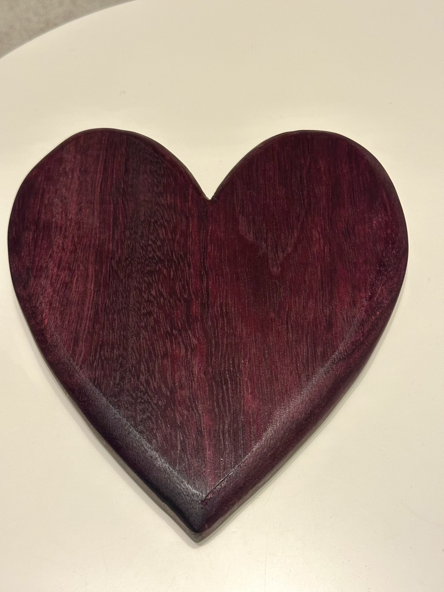
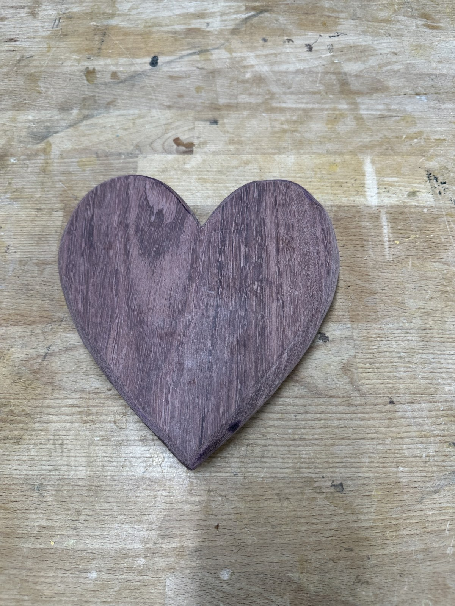
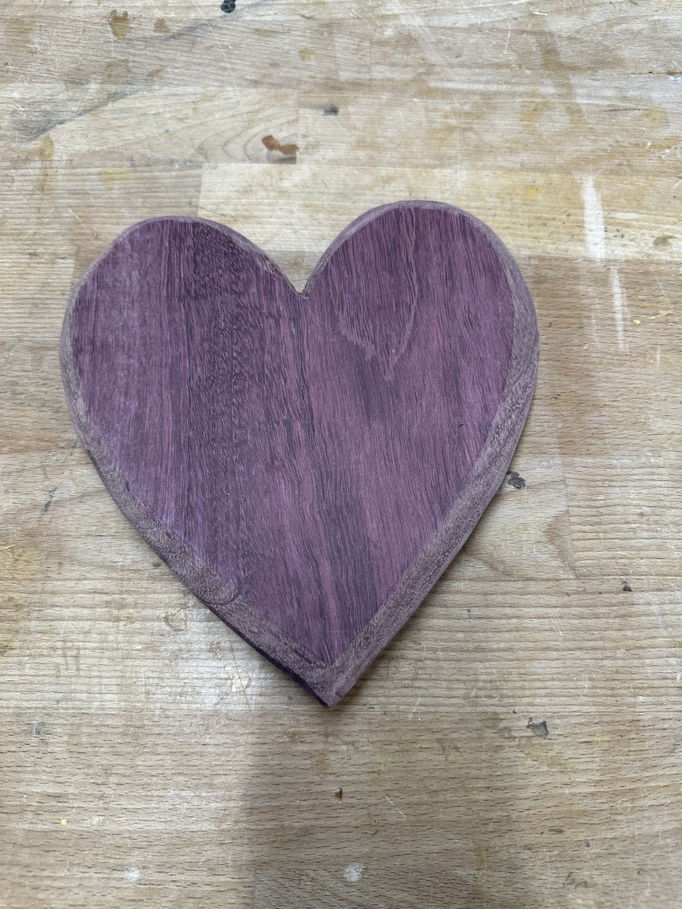
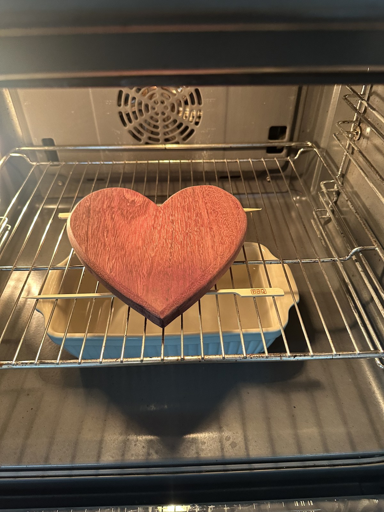

A 25 cm × 15 cm heart-shaped serving board carved from a monolithic solid slab of Purpleheart (*Peltogyne*). Features deep router-table curved edges, an oven heat-treatment at 120°C–150°C to awaken intense violet coloration, and a natural beeswax Holz-Butter finish.
Heart-shaped silhouette with flowing organic compound curves
Edge Treatment
Heavily curved roundover profile shaped on the router table and hand-blended
Thermal Color Activation
Baked in oven at 120°C – 150°C for up to 60 minutes prior to oiling to accelerate photochemical pigment oxidation
Surface Conditioning
Swiss Holz-Butter (100% natural organic beeswax and plant oils)
Intended Function
Artisanal cheese platter, charcuterie service, and decorative culinary centerpiece
Workshop Origin
Zürich, Switzerland
Thermal Oxidation & Beeswax Transformation
Raw Routed Wood vs. Oven-Bake & Holz-Butter
Drag the center handle to see how heat-treating between 120°C–150°C followed by beeswax Holz-Butter transforms the pale lilac timber into a deep, regal wine-violet.

Raw Routed & Sanded140°C Oven + Holz-Butter
Workshop Journey
The Complete Build Log
From a dense exotic hardwood plank to a sculpted, thermally activated heirloom serving piece.
Step 01Material Selection & Rough Cut
Selecting the Single Slab & Bandsaw Silhouette
Unlike laminated cutting boards, this project celebrates the monolithic beauty of a single solid piece of timber. A flawless 25 cm × 15 cm section of kiln-dried Central/South American Purpleheart (*Peltogyne*) was selected for its dense, knot-free heartwood. The heart silhouette was drafted with smooth symmetrical curves, then cut out on the bandsaw close to the line, leaving a clean margin for precision shaping.

Raw single-piece Purpleheart blank after initial contour cutout on the workbench.Click to enlarge

Close-up of the continuous grain pattern flowing uninterrupted across both lobes of the heart.Click to enlarge
Step 02Router Table Sculpting
Deep Curved Edges Shaped on the Table Router
A serving board must feel inviting and silky in hand. To eliminate harsh flat edges, the piece was brought to the router table. Using a large-radius bearing-guided roundover bit, heavy flowing curves were machined along the entire top and bottom perimeter. The inner cleft of the heart and the delicate bottom tip required careful climb-cutting and progressive light passes to avoid tear-out on Purpleheart's dense 2,520 Janka fibers. The curves were then hand-blended with flexible abrasive pads through 120, 180, 240, and 320 grit.
Routed and hand-blended curved profile. Notice how the contours soften light reflections.Click to enlarge
Router Safety & End Grain Burn
Because Purpleheart contains natural resins and extreme cellular density, it easily burns if a router bit lingers even a fraction of a second. Running the table router at moderate RPM (around 16,000 RPM) with rapid, continuous feed passes prevents burning while delivering a glass-smooth edge.
Step 03Thermal Color Awakening
The Secret Oven Bake: 120°C–150°C for up to 60 Minutes
Freshly cut and sanded Purpleheart looks remarkably muted: a dull grayish brown with faint lilac hints. Normally, woodworkers wait weeks or months under direct sunlight for UV rays to oxidize the heartwood into purple.
To unlock the absolute deepest, most vibrant purple coloration instantly, the sanded board was placed in a preheated domestic oven between 120°C and 150°C for approximately 45 to 60 minutes. The gentle dry heat accelerates the photochemical oxidation of peltogynol pigments within the wood fibers without scorching or charring the cellular structure. As the heat permeates the solid timber, the entire board explodes into a breathtaking, electric magenta-violet!

After the oven bake: Thermal activation causes the purple pigments to bloom across the entire surface.Click to enlarge
The Chemistry of Thermal Oxidation in Peltogyne
Purpleheart contains specialized polyphenolic compounds (peltogynoids). Heat drives out residual moisture and triggers rapid oxidative coupling of these flavonoids. Keeping the temperature safely under 160°C prevents the wood from darkening to brown, locking in the coveted royal violet state.
Step 04Natural Sealing
Finishing with Swiss Beeswax Holz-Butter
While the board was still warm from the oven, it was generously conditioned with natural Swiss Holz-Butter (a pure food-grade blend of organic beeswax and pharmaceutical-grade botanical oils). The warmth allowed the beeswax to liquefy and soak deeply into the open wood pores. Using a soft lint-free cotton cloth, the butter was massaged in circular motions, deeply feeding the timber and locking in the thermal purple coloration.
Hand-buffing with Holz-Butter. The beeswax creates a velvety, food-safe tactile seal.Click to enlarge
Step 05The Final Masterpiece
The Finished Heirloom Serving Board
After letting the beeswax cure for 24 hours and executing a final high-speed flannel buff, the completed heart board displays an astonishing depth of color: a rich, royal wine-violet that shifts with the light. The heavy curved profile feels exceptionally comfortable to hold, serving as the ultimate centerpiece for cheeses, fruits, and charcuterie.
The completed piece: Deep, lustrous violet heart board ready for culinary presentation.Click to enlarge
Workshop Archive
Complete Project Gallery
Click on any photo to inspect high-resolution details in the lightbox viewer.